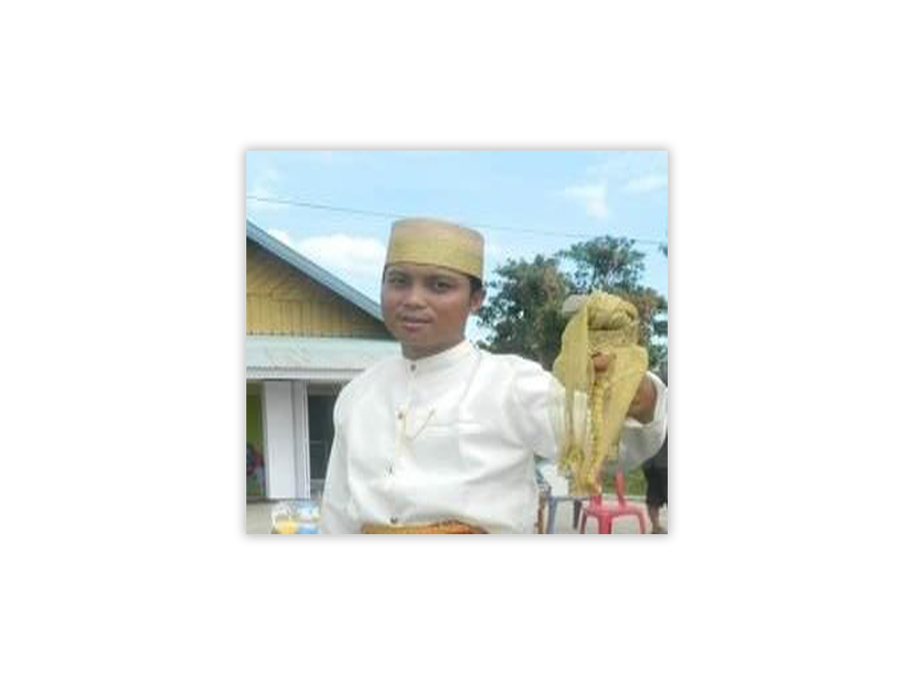
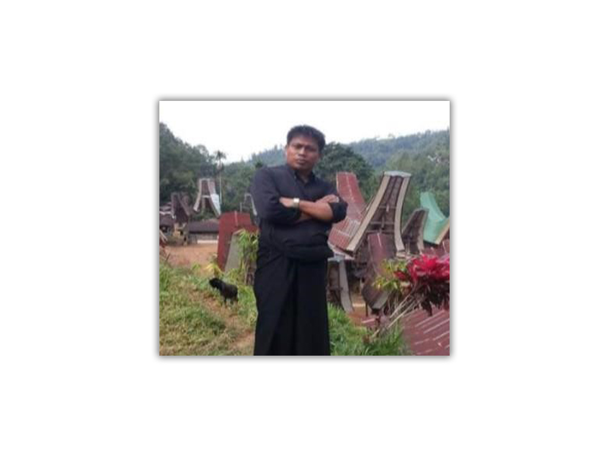
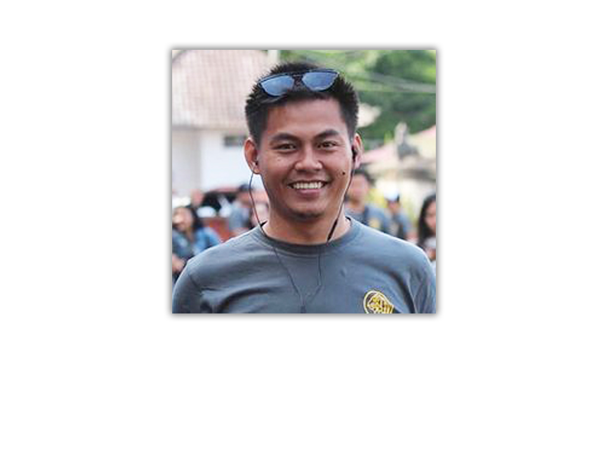
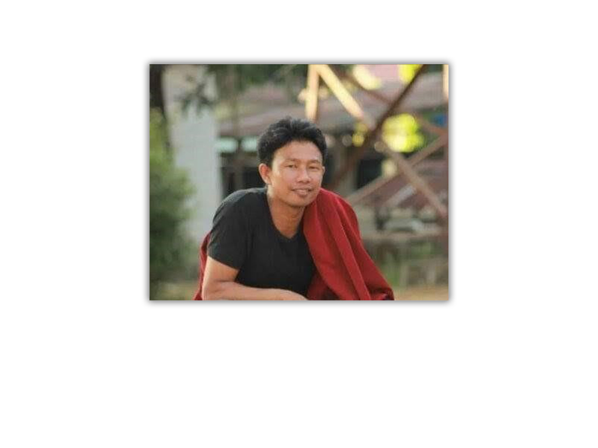

Mengenal sejarah PPGT Jemaat Bukit Tamalanrea
SEJARAH BERDIRINYA JEMAAT BUKIT TAMALANREA
Pada tahun 1989 Jemaat Ujung Pandang Timur dimekarkan menjadi 3 jemaat, yaitu Jemaat Biringkanaya, Jemaat Tello Batua, dan Jemaat Rama. Jemaat Biringkanaya dinyatakan sebagai jemaat yang berdiri sendiri dalam Gereja Toraja Klasis Makassar pada bulan April 1990. Kurang lebih 3 tahun menjadi bagian dari Jemaat Biringkanaya, akhirnya pada tahun 1992 Jemaat Bukit Tamalanrea yang pada saat itu masih disebut Cabang Kebaktian
Soleman memutuskan untuk ingin memisahkan diri dari Jemaat Biringkanaya dan berdiri menjadi satu jemaat. Namun hal ini menuai pro dan kontra dari beberapa jemaat, khususnya jemaat yang berdomisili di Perdos dan Antara yang kontra dengan hal ini meskipun lebih banyak jemaat yang sepakat dengan keputusan ini.
Dalam persiapannya, pada tanggal 9 Maret 1992 dilakukan pengadaan tanah sesuai akte jual beli No.208/III/BK/1992 dari Ibu/Bapak Kol.J.B.Rombe, dan pada tanggal 10 November 1994 dilaksanakan peletakan batu pertama pembangunan gedung gereja Jemaat Bukit Tamalanrea.
Tanggal 18 Mei 1997 merupakan suatu waktu dimana pembangunan gedung gereja memasuki waktu pelaksanaan ± 2,5 tahun sejak peletakan batu pertama. Waktu yang relatif singkat dibanding dengan pembangunan gedung-gedung gereja yang terlebih dahulu dibangun di Kotamadya Ujung Pandang. Sehingga pada tanggal 24 Oktober 1999 dilaksanakan pentabisan Gedung Gereja Jemaat Bukit Tamalanrea oleh Pdt.J.K.Parantean, M.Th.
PPGT DIMASA JEMAAT PERSIAPAN
(PPGT CABANG KEBAKTIAN SOLEMAN)
Biodata Ketua PPGT Jemaat Bukit Tamalanrea Masa Persiapan
Nama : Yusuf Pongsapan, S.T
Tanggal Lahir : Penanda, 2 Juli 1969
Alumni : Universitas HasanuddinJurusan : Teknik Mesin
Sejak dimekarkan menjadi Jemaat Biringkanaya, Cabang Kebaktian Soleman sudah melaksanakan ibadah pemuda yang dilaksanakan setiap hari Sabtu pukul 19.00 WITA yang dihadiri oleh banyak pemuda (sekitar 50-60 orang setiap ibadah). Juga, letak geografis Jemaat Bukit Tamalanrea berada di antara perguruan tinggi antara lain, Universitas Hasanuddin, Poltek, STMIK Dipanegara, STMIK AKBA, dan beberapa kampus besar lainnya, sehingga warga jemaat didominasi oleh kaum muda. Kaum muda yang bergabung di Cabang Kebaktian Soleman pada masa ini dikoordinir oleh Yusuf Pongsapan dan Sherly Sandapadang dari awal tahun 90-an dengan melakukan berbagai kegiatan, seperti ibadah pemuda, paduan suara, latihan kepemimpinan, ret-reat, bahkan mengikuti lomba-lomba di tingkat klasis.
Pemuda pun banyak berperan aktif dalam pelayanan-pelayanan di ibadah rumah tangga dan juga dalam proses pembangunan gedung gereja, terutama pada saat pengecoran gedung gereja. Namun dalam perjalanannya, banyak pula hambatan yang dilalui seperti sulitnya berkomunikasi karena teknologi yang kurang memadai pada saat itu, dan juga kurangnya alat transportasi yang mengharuskan pengurus untuk berjalan kaki dari pondokan ke pondokan untuk merekrut dan mengunjungi anggota. Akan tetapi dalam keterbatasannya, kebersamaan PPGT Cabang Kebaktian Soleman sangat erat dan tidak mengurangi semangat anggota untuk mengikuti suatu kegiatan.
PERIODE KEPENGURUSAN PPGT JBT 2000-2002
HASIL RAPAT ANGGOTA I
Ketua : Alm. Christmas Pamangin (Wafat Januari 2014)
Sekretaris : Almh. Agustina Rante Ta’dung (Wafat 30 Desember 2012) digantikan oleh Sandra Paleleng.
Bendahara :Iche SandapadangKoor. Bid. Ibadah : Kak Opping
Setelah resmi menjadi jemaat yang mandiri, terbentuklah OIG di Jemaat Bukit Tamalanrea pada tahun 1999. Sehingga pada tahun 2000 dilaksanakan Rapat Anggota I yang menetapkan Alm. Chistmas Pamangin sebagai Ketua PPGT Jemaat Bukit Tamalanrea, Almh. Agustina Rante Ta’dung sebagai Sekretaris, dan Iche Sandapadang sebagai Bendahara, kemudian Almh. Agustina Rante Ta’dung di PAW karena meninggalkan wilayah pelayanan pada saat lulus kuliah dan digantikan oleh Sandra Paleleng pada tahun 2001 yang terpilih di ibadah rutin PPGT . Di awal kepengurusan, wilayah pelayanan PPGT Jemaat Bukit Tamalanrea dibagi menjadi 2 wilayah, yaitu Wilayah Pelayanan I dan Wilayah Pelayanan II.
Selama kepengurusan, kekompakan antar pengurus sangat besar. Ditandai dengan aktifnya semua pengurus dalam berbagai kegiatan dan juga aktif dalam melibatkan anggota (non pengurus). Ibadah pemuda dilaksanakan sebanyak 2-3 kali dalam seminggu dengan rincian : 1 kali di gereja dan 2 kali di pondokan-pondokan yang dihadiri oleh 60-70 orang pada setiap pelaksanaan ibadah. Adapun beberapa bentuk kegiatan pada kepengurusan ini, yaitu : KPD, Sel-Sel Doa (PA), Ret-Reat, Ibadah Paskah, dan Natal. Namun dalam perjalanan kepengurusan, banyak pula hambatanhambatan yang dilalui oleh pengurus, seperti kurangnya koordinasi dan perhatian dari BPM kepada PPGT sehingga SDM PPGT kurang diberdayakan secara maksimal, dan juga kurangnya koordinasi antara PPGT dan SMGT.
Pada periode ini juga pengurus memiliki tanggung jawab yang besar kepada anggota PPGT karena pada saat itu diadakan sweeping KTP di wilayah PK 4 dan sekitar kampus Unhas dengan mencari orang yang ber-KTP Kristen. Meskipun pada saat adanya seeping banyak anggota PPGT yang sudah pulang kampung karena sudah memasuki akhir tahun (November-Desember), tapi ada juga yang masih tinggal di Makassar. Salah satu anggota PPGT yang merasakan dampak dari sweeping ini yaitu Kak Robert yang pada saat itu bertanggungjawab untuk melindungi seorang anggota PPGT yang tinggal di Pondok Imanuel dengan menyembunyikan dan menguncinya dalam satu kamar, namun justru beliaulah yang didapat dan diseret ke jalan PK 4. Dalam keadaan terdesak, Kak Robert pura-pura mati sehingga langsung dibuang ke selokan. Diketahui bahwa sweeping KTP tersebut merupakan imbas dari tragedi kerusuhan Ambon di tahun 2000 akhir dan 2001 awal. Tragedi sweeping KTP ini merupakan satu kenangan tak terlupakan di masa kepengurusan periode 2000-2002.
PERIODE KEPENGURUSAN PPGT JBT 2002-2004
Biodata Ketua PPGT Jemaat Bukit Tamalanrea Periode 2002-2004
Nama : Henry Mangopo, S.Th
Nama Panggilan : Henry/Endy
Tempat, tgl lahir : Balikpapan, 18 Februari 1976Pekerjaan : Guru
Motto Hidup : Berfikir Positif
Hasil Keputusan Rapat Aggota II PPGT Jemaat Bukit Tamalanrea menetapkan Henry Mangopo, S.Th sebagai ketua ppgt jemaat bukit tamalanrea periode 2002-2004. Dalam menjalankan mandat kepengurusan tidaklah mudah, Namun Tuhanlah yang menjadi Nahkoda dalam perjalan kepengurusan. Pada waktu itu ada beberapa program kerja pengurus, internal maupun eksternal yang telah disepakti antara lain yaitu Ibadah Rutin, Ibadah bersama PPGT jemaat lain, Ibadah Padang/reat-reat, Pembinaan, kerjasama dengan LPMI, Bakti Sosial & salah satunya yang tak terlupakan yaitu donor darah. Partisipasi anggota PPGT pada waktu itu sangatlah luar biasa. awalnnya berfikir program tersebut tidak dapat dilakukan, namun ternyata mendapatkan respon yang baik dari PMI karena yang ikut pada waktu itu sekita 70 sampai 80 orang, walaupun ada beberapa yang tidak dapat mendonorkan darahnya karena tidak memenuhi syarat kesehatan tapi Puji Tuhan program tersebut dapat terlaksana dengan baik & Saat itu ada Sekitar 50-an kantong darah yang dapat diperoleh.
Teringat pada saat pencalonan ketua PPGT dan saya dicalonkan menjadi ketua. saat itu saya bergumul karena sementara dalam menyusun skripsi. Teman-teman dikampus memberikan saran agar posisi itu jangan diambil dengan alasan jika diambil pikiran akan tebagi antara urusan kuliah & kegiatan ppgt. Di situasi seperti itu saya bergumul dan berdoa, jikalau memang saya terganggu, hal tersebut tidak akan menjadi masalah. yang terpenting bagi saya yaitu untuk kebaikan banyak orang. hingga pada akhirnya saya memutuskan untuk mengambil posisi tersebut. Walaupun saat itu study saya terganggu dan sedikit mengalami kemunduran, namun itu tidak menjadi hambatan bagi saya. selanjutnya kebersamaan dengan teman-teman PPGT yang sangat luar biasa, seperti jika ada anggota PPGT yang sakit, atau bermasalah kami mengunjungi dan mendoakannya, sering membuat kegiatan dan mengundang dosen dari STT Intim untuk memberikan pelatihan atau seminar demi membangun persekutuan kita menjadi lebih hidup. ketika akan membuat acara/kegiatan di gereja, jika mengalami kesulitan dana kami mudah saja mencari karena adanya dukungan dari majelis gereja, terlebih pada waktu itu Bapak Pdt. Musa Salusu yang sangat memberikan dukungan, hal tersebut yang tidak dapat terlupakan. Tidak hanya itu, dari warga jemaat dan orang tua kita di Bukit Tamalanrea merekapun sangat mendukung pada waktu itu.
Perkembangan PPGT pada saat sebelum dan sesudah menjadi pengurus
Pertama jika dilihat dari kuantitas, jumlah anggota PPGT yang mengikuti ibadah PPGT ada kemajuan atau peningkatan dibandingkan dengan yang sebelumnnya, karena pada waktu itu kebanyakan masih berstatus sebagai mahasiswa, sehingga tiap minggu banyak wajah-wajah baru yang bergabung di PPGT. Kedua, kami melihat anggota PPGT terutama yang sudah terlibat mengambil bagian dalam pelayanan di PPGT JBT waktu itu, rata-rata mereka juga sudah diperlengkapi dari kampus mereka masing-masing, seperti mereka yang bergabung dalam LPMI, dan Perkantas, sehingga hal itu memberi nilai tambah dan PPGT pada waktu itu cepat berkembang.
Pesan kepada anggota PPGT sekarang ini
Pesan saya, ini berkaca dari pengalaman. saya bisa berbicara dan berani tampil, bisa berkomunikasi dengan baik, bergaul dengan banyak orang, melatih pertumbuhan iman & mental itu semua karena PPGT. PPGTlah yang membina saya hingga menjadi seperti sekarang ini. Jadi, bersyukulah kita bisa aktif di PPGT. Libatkan diri kalian dalam pelayanan , pergunakanlah masa mudamu dengan baik, jadikan moment itu sebagai batu loncatan agar bisa tampil lebih baik lagi kedepannya, serta dapat menjadi pemimpin yang lebih baik. Tuhan dimuliakan.
PERIODE KEPENGURUSAN PPGT JBT 2004-2006
Biodata Ketua PPGT Jemaat Bukit Tamalanrea Periode 2004-2006
Nama : Petrus Lambotta
Tempat, Tanggal Lahir : Rantepao, 30 November 1981
Hobby :
Seiring berjalannya waktu tibalah diRapat Anggota ke 3, yang dimana pada waktu itu ada beberapa yang mencalonkan diri sebagai ketua diantaranya Ones Lintin, Fatra Gasong & Petrus Lambotta. Dari ke3 kandidat itu, dengan memperhatikan kriteria dan melalui hasil voting, maka terpililah Petrus Lambotta sebagai Ketua PPGT Jemaat Bukit Tamalanrea Periode 2004-2006. Sebelumnya Petrus Lambotta pernah juga menjadi pengurus hasil PAW di Tahun 2004, yang dipercayakan dibidang Humas pada saat itu. Petrus Lambotta merupakan anggota ppgt yang aktif dan peka terhadap PPGT. Adapun gambaran internalnya yaitu melaksanakan beberapa kegiatan yang telah diprogramkan selama kepengurusan berjalan diantaranya Ibadah rutin, Paskah, PAB, LKPD, LKPL, Natal, & kerja bakti didalam gedung gereja bersama okp. Serta melibatkan anggota untuk terlibat dalam suatu kepanitiaan. Gambaran eksternalnya yaitu melibatkan tiap anggota sebagai utusan dalam kegiatan di PPGT Klasis Makassar yang telah direncanakan sebelumnya. Serta melaksanakan kegiatan dengan organisasi kampus seperti LPMI & PMKO pada waktu itu.
Menjalani sebuah tanggung jawab sangatlah tidak mudah, ada banyak suka dan duka yang dilalui bersama, perbedaan pendapat antara majelis dan juga guru sekolah minggu pada saat itu. Hambatannya adalah ketika melaksanakan kegiatan terkadang dana yang dibutuhkan tidak mencapai target, maka yang diharapkan adalah subsidi dari PMJ yang sedikit dipersulit untuk mencairkan dana tersebut, sehingga melaksanakan pencarian dana seperti aksi parkir, bazar tempat dan juga proposal.
Perkembangan PPGT sebelumnya adalah sulitnya komunikasi antar anggota dkarenakan waktu itu gadget masih kurang jadi yang dilakukan cara manual. Perkembangan PPGT masa kini adalah komunikasi sudah lancar melalui media sosial, tidak sulit melakukan adaptasi, gampang sosialisasi, dan juga merekrut anggota baru lewat media sosial ataupun secara manual.
PERIODE KEPENGURUSAN PPGT JBT 2006-2008
Biodata Ketua PPGT Jemaat Bukit Tamalanrea Periode 2006-2008
Nama Lengkap : Alnores Desembri Sammane
Nama Panggilan : Nores
Tempat Tanggal Lahir : Mebali, 5 Desember 1986Pekerjaan : Karyawan swasta
Hobby : Membaca
Motto :“Gagal melakukan perencanaan sama dengan merencanakan kegagalan”
Pengalaman Organisasi :
Perjalanan kepengurusan ini selama selang waktu sesungguhnya sangat panjang namun terasa begitu singkat, mimpi yang dirajut ketika mengawali kepengurusan ini. Rapat Anggota IV dua tahun silam menetapkan sejumlah keputusan-keputusan serta rekomendasi untuk dilaksanakan. Meskipun demikian, tidak dapat dipungkiri bahwa keberhasilan yang telah tercapai tidak lepas dari berbagai kekurangan, bahkan banyak amanat yang dipercayakan tidak mampu untuk diwujudkan.
Gambaran serta perjalanan Kepengurusan
Dengan semangat untuk mewuwjudkan visi pelayanan yang berkualitas di PPGT Jemaat Bukit Tamalanrea, mengawali pelayanan ini dengan penuh motivasi. Sadar akan besarnya tanggungjawab yang diembankan, perjalan awal kepengurusan ini tidak lepas dari sejumlah kekuatiran. Pengurus inti periode 2006-2008, telah terpilih dalam Rapat Anggota IV yang berlangsung 28-30 Juli 2006 di Gedung Gereja Jemaat Bukit Tamalanrea, Alnores Desembri Sammane sebagai ketua, Markus Ruru selaku sekretaris, Yona Patanduk sebagai Bendahara, bersam tim formatur melengkapi personel pengurus sesuai dengan struktur yang telah ditetapkan. 21 kader yang telah dianggap terbaik untuk memegang kendali kepengurusan persekutuan ini. Untuk mengantisipasi adanya personel yang meninggalkan wilayah pelayanan sebelum masa bhakti berakhir maka setiap bidang ditempatkan 4 kader dengan asumsi bahwa jika kekuatiran itu terjadi. Kemudian di SK-Kan oleh BPM Gereja Toraja Jemaat Bukit Tamalanrea dan dilantik dalam ibadah pagi pada tanggal 27 Agustus 2006 pukul 07.00 wita oleh Pdt. Samuel Tokam Kabanga’, S. Th.
Karena suksesi kepengurusan berlangsung bukan pada akhir tahun anggaran, maka Rapat Kerja I yang dilaksankan pada minggu II September 2006 tidak lagi membahas dan menetapkan program kerja yang bary, melainkan melanjutkan program kerja yang telah di tetapkan oleh pengurus sebelumnya. Hingga akhir tahun 2006 sebagai tahun pertama kepengurusan, kekompakan dan kerja sama antar pengurus tetap terjalin dengan baik, meskipun komunikasi belum begitu lancer karena minimnya alat komunikasi yang dimiliki terutama ketua PPGT. Salah satu kegiatan yang berhasil dilaksanakan dalam tahun ini adalah ikut serta dalam lomba pesparawi PPGT Klasis Makassar, pecan pemuda dan perayaan natal. Upaya agar pemuda yang berdomisili di beberapa pondokan terlibat aktif dalam kegiatan PPGT telah dilakukan dengan proaktif, selain perkujungan kepondokan, setiap kegiatan pembinaan, Ibadah maupun seminar dan pertandingan-pertandingan. Pengurus senantiasa mengirim surat untuk mengundang pondokan agar dapat terlibat, beberap kali melakukan pendekatan melalui telepon atau sma, melibatkan dalam kepanitian, dijdwalkan dalam pelayanan kebaktian rutin, bahkan mendatangi langsung ke pondokan. Yang mereka anggap anggota PPGT ialah pemuda yang rajin kegerja, yang sering ikut kebaktian, kesan negative lainnya, pengurus laki-laki yang sering jalan untuk ke pondokan dicap lagi “Mangngodo”. Keluhan pun tak dapat dihindari sebagai manusia biasa, cara apa lagi yang harus dilakukan ? metode apa lagi ?. usaha untuk menepis kesan PPGT yang eksklusif terjadi melalui pelibatan anggota non suku Toraja dalam even pesparawi dan mengundang denominasi lain dalam kegiatan-kegiatan diskusi, seminar maupun kegiatan-kegiatan yang mengundang unsur kebersamaan. Selain itu, hubungan dengan Jemaat-jemaat tetangga serta partisipasi dalam kegiatan Klasis juga semakin meningkat.
Memasuki tahun 2007, kepengurusan mulai menghadapi tantangan, selain kesibukan beberapa personil karena kepentingan studi, pembinaan pengurus yang seharusnya dilaksankan pada awal kepengurusan belum juga terealisasi. 4 Desember 2007 Rapat kerja II disepakatilah sejumlah program kerja yang selain diperuntukan bagi kemajuan persekutuan dan anggota. Pembinaan pengurus telah dilaksankan dengan harapan semangat pelayanan tidak akan surut dalam mengahadapi tantangan yang akan hadir. Sangat disayangkan memasuki pertengahan tahun, sejumlah personel mulai menunjukan tanda-tanda kemunduran, pendekatan proaktif telah dilakukan dengan harapan bahwa akan kembali sadar akan apa yang pernah di ikrarkan dihadapan Tuhan pada tengah-tengah Jemaat : percaya,mengaku serta berjanji. Yang lebih menyedihkan lagi saat-saat dimana masukan serta dampingan dari pengurus demisioner saat itu juga satu persatu meninggalkan wilayah pelayanan karena sebuah tuntutan masa depan untuk mencari pekerjaan. Dalam kesibukan menjelang pelaksanaan LKPL Klasis Makassar sebagai Jmeaat penghimpun, kabar duka menghampiri ketika Ayahanda Alm. Joni Tallulembang pergi untuk selamanya (3 Mei 2007). Kepergian beliau meninggalkan duka yang begitu mendalam, kehilangan sosok yang begitu peduli dan perhatian kepada generasi muda. Meski dibalut duka, namun karena perkenan Tuhan persekutuan tetap berlangsung dan pelaksanaan LKPL dapat dilakukan dengan baik, kebanggan atas keberhasilan menjadi pelaksana kegiatan Klasis diikuti dengan terpilihnya sdr. Dance sebagai salah seorang pengurus Klasis periode 2006-2007 melalui mekanisme Pergantian Antar Waktu pada tanggal 30 Juni 2007 menggantikan abang Petrus Lambotta, ST yang meninggalkan wilayah pelayanan pada april 2007. Setelah beberapa “senior” meninggalkan Makassar, menyusul Sdr. David Syukur sebagai salah satu anggota bidang pelayanan begitupun dengan Bapak Pdt. Duma’ Tonda sebagai pendeta generasi muda untuk mutasi kebalikpapan.
Melalui bimbingan dari ketua II BPM Jemaat Bukit Tamalanrea, masukan dari beberapa orang tua dalam rapat pengurus pada tanggal 25 Juli 2007 maka dilakukanlah reshuffle pengurus. Selain mengisi posisi yang lowong, juga diadaka pergeseran sejumlah personil berdasarkan pertimbangan potensi dan talenta yang dimiliki. Setelah keputusan ini, jumlah pengurus bertambah menjadi 23 kader dengan masuknya Sdr. Melky pada bidang Litbang, Sdr. Yustinus Pasambo dan Sdr. Andika Sarly Tandirura pada bidang pelayanan. Ditahun akhir pelayanan Sdr. Asriel “ijo”, Emma “bunda”, Ittang “Kiky”, Rini dan selin bahkan Sdr. Otto “Baby” meninggalkan wilayah pelayanan karena tuntutan kehidupan, meski langkah agak tertatih dan pincang setelah ditinggalkan beberapa personel pengurus , namun karena percaya bahwa doa dan dukungan tidak perna hilang untuk persekutuan ini. Awal 2008 dijalani kembali dengan semangat baru, meskipun pengurus inti harus meninggalkan wilayah pelayanan selama beberapa bulan karena kepentingan studi. Melalui Raker pada Tanggal 14 Januari 2008, disepakatilah program kerja yang merupakan lanjutan program tahun sebelumnya dan beberapa program baru. Kembali berita duka menghampiri ketika Ayahanda Alm. Bpk A. P. Tangkeallo berpulang kepangkuan Bapa, ada duka yang mendalam mengingat beliau juga merupakan sosok majelis yang senantiasa siap untuk pelayanan PPGT. Tetes air mata kembali membalut hati diakhir Agustus 2008 Jemaat kembali kehilangan seorang Majelis yang dikenal dekat dengan pemuda khususnya wilayah Antara dan sekitarnya; Alm Bpk. Samuel Paliling. Pergumulan lain yang dihadapi oleh pengurus adalah Komunikasi dengan orang tua khususnya dengan BPM masih sangat kurang. Seiring waktu masalah tersebut sedikit demi sedikit dapat terkikis, melalui diskusi berbagai masukan dan saran yang membangun persekutuan telah disampaikan, salah satunya partisipasi pemuda dalam kedukaan yang dialami jemaat. Beberapa waktu pengurus mendapat sosrotan karena tidak mampu mewujudkan kepedulian pada kehidupan Jemaat, setelah menerima masukan secara khusus dari Bidang II BPM JBT Bpk. M. D. Tandirura’, pak Marten Luther serta Om Yan dan berkat kesehatian anggota serta kesadaran untuk PPGT semakin membaik mengingat partisipasi yang senantiasa hadir dalam momen-momen yang diharapkan jemaat, termasuk dalam kehidupan pelayanan ditengah jemaat, berintekasi baik dengan anggota jemaat,selain itu sejumlah kegiatan dapat dilaksanakan karena dukungan orang tua. Tidak hanya dalam bentuk materi berupa uang, namun perhatian orang tua mewujud dalam kesediaan mendukung pengurus dan kepanitian dalam berbagai hal.
Patut berbangga karena beberapa kader dapat dipercaya memegang tanggung jawab pada jenjang yang lebih luas; sebagai panitia LKPL Klasis Makassar, Panitia Praya VIII Kontingen Klasis Makassar, Tim Kerja Konferensi Wilayah IV, Tim Kerja Retret Klasis Makassar, Tim Kerja Kontingen Klasis Makassar pada Kongres XII PPGT, Utusan Klasis ke Kongres XII di Kalimantan Timur Samarinda, Panitia Ntatal dan Die Natalis Klasis Makassar tahun 2008. Hal lain yang patut mendapatkan apresiasi ialah kader yang tidak perna putus dari periode keperiode sebagai pengurus Klasis Makassar sejak Bang Chrismas Pamangin, Alm. Very Tandirau, Petrus Lambotta, Dance T. Lobo’, hingga Gusti Patadng dalam periode 2007-2009. Kehadiran PPGT JBT dalam berbagai kegiatan Klasis juga menunjukan peningkatan, hal tersebut terlihat dari partisipasi setiap pertemuan bulanan klasis, Selain LKPD IV yang merupakan rekor peserta terbanyak sepanjang PPGT JBT, bahkan menjadi trendsette. Kampanye sosial dengan stiker, penanaman pohon dalam memperingati hari bumi, aksi donor darah digereja, pembuatan PDH PPGT, Turnamen Futsal, pekan pemuda, seminar dunia kerja, dll. Dan sekali lagi kepengurusan tidak mampu melakukan semua itu jika bukan karena dukungan dari orang tua dan kesetiaan anggota. Kerjasama dengan Ekstra Gerejawi senantiasa diupayakan agar berlangsung baik, dengan melibatkan Lembaga/Organisasi lain dalam pelaksanaa program kerja baik dalam bentuk kerjasama, mengundang OKP lain, maupun ikut serta dalam kegiatan yang dilaksanakan oleh Organisasi lain sesuai undangan tentunya disesuaikan dengan kemampuan dan potensi yang dimiliki. Dua tahun perjalanan kepengurusan diwarnai dengan berbagai peristiwa penting diluar kepengurusan yang berpengaruh pada kehidupan PPGT JBT, baik secara langsung maupun tidak langsung. Dinamika kampus ikut berpengaruh pada perjalanan persekutuan ini. Kerjasama dengan PMK diberbagai kampus dilakukan sebagai upaya mengenalkan PPGT kepada dunia luar namun respon selama ini masih kurang. Kehidupan dipondokan dan lingkungan pergaulan juga menjadi tantangan tersendiri bagi persekutuan ini, tidak dapat dipungkiri bahwa pengaruh kehidupan modern juga membawa dampak negatif bagi persekutuan, gaya hidup egois, individualistik, hedonis, materialis juga melanda sebagian anggota persekutuan. Gaya hidup mewah dan pergaulan bebas menjadi penyakit kornis yang melanda generai muda, penyalahgunaan Narkoba, HIV AIDS, sex bebas, mabuk-mabukan juga merupakan tantangan berat yang harus dihadapi persekutuan ini. Seminar dan lokakarya HIV AIDS yang dilakukan oleh STT INTIM dihadiri oleh 2 orang anggota “Alnores D. S dan Natalia Karel S. Th, akan tetapi belum mampu menjawab tantangan sebagaimana diuraikan di atas.
Dalam periode kepengurusan ini satu peristiwa monumental yang tercatat dalam sejarah dan semoga tidak akan pernah kita lupakan sebagai orang Toraja adalah bahwa pada tahun 2008 ini kita telah “sepakat” membelah tondok lepongan bulan menjadi 2 bagian. Peristiwa pemekaran Kab. Tana Toraja menjadi 2 kabupaten baru, merupakan wacana yang telah bergulir begitu lama namun mencapai puncaknya pada 2006 ditandai dengan maraknya aksi demonstrasi yang terkait dengan masalah ini. Selama penggodokan keputusan ini senantiasa diiringi pro dan kontra, salah satu kelompok yang tegas menyatakan sikap menolak adalah kalangan mahasiswa Toraja yang terhimpun dari berbagai kampus yang ada di kota Makassar. Meskipun kami mampu mewujudkan sebagian amanat RA IV dua tahun yang lalu, kami juga tidak lepas dari berbagai kekeliruan dan kekurangan. Hal yang begitu membahagiakan ketika tercapai sebuah keberhasilan sekalipun kecenderungan yang sering terjadi adalah keberhasilan hanya dicapai oleh pengurus dalam melaksanakan program kerja, namun tujuan tidak tercapai maksimal karena kurangnya respon anggota. Akan tetapi jauh lebih bijak jika kita masing-masing menilai secara objektif dan biarlah semua yang mampu kita lakukan bersama dapat menjadi persembahan bagi Dia Sang Pemilik persekutuan ini. Kekurangan, cercaan, caci maki, celaan, saran dan kritik biarlah menjadi bahan perbaikan untuk semakin majunya PPGT tercinta. Tangisan dan air mata juga kadang mewarnai liku-liku perjalanan persekutuan, akan tetapi semua itu tidak lagi mengganjal ketika mengingat canda, senyum dan tawa yang terbangun dalam kebersamaan. Pengorbanan materi, waktu, tenaga dan perasaan adalah bagian yang tidak terpisahkan dari hidup seorang pelayan yang setia sebagai seorang hamba. Sedikit pengorbanan yang mungkin pernah kami lakukan adalah sematamata karena rasa memiliki PPGT, karena sadar bahwa sungguh terlalu banyak hal yang PPGT telah berikan dalam kehidupan kami.
Semua karena cinta…. semuanya itu kembali mengingatkan kami bahwa sesungguhnya menjadi pengurus bukanlah hal yang mudah, namun setitik keyakinan akan terus menyala dalam jiwa ini mengingat firmanNya “Karena itu, saudara-saudaraku yang kekasih, berdirilah teguh, jangan goyah, dan giatlah selalu dalam pekerjaan Tuhan! Sebab kamu tahu, bahwa dalam persekutuan dengan Tuhan jerih payahmu tidak sia-sia (I Kor. 15:58). Banyak pengalaman berharga, pembentukan karakter dan kekuatan yang kami peroleh dari setiap peristiwa yang terjadi. Tuntutan kerendahan hati, lapang dada, ketekunan, kesabaran, kemampuan manajerial, kepemimpinan, kemampuan berorganisasi, tangis dan tawa akan engkau temui disini. Di balik semua itu, ada asa bahwa sesungguhnya kita sedang dipersiapkan untuk sebuah pekerjaan yang lebih besar, dan Dia Sahabat Sejati, Gembala Yang Baik tidak akan pernah meninggalkan kita. Terpujilah Dia kekal selama-lamanya !
PERIODE KEPENGURUSAN PPGT JBT 2008-2010
Biodata Ketua PPGT Jemaat Bukit Tamalanrea Periode 2008-2010
Nama panggilan : Rian/Ripan
Tempat Tanggal Lahir : Palopo, 18 Februari 1989
Pekerjaan : Freelance
Hoby : Futsal, nonton bola, baca komik/webtoon
Motto : “Lakukan yang baik yang bisa dilakukan apapun hasilnya”
GAMBARAN UMUM PERJALANAN ORGANISASI
Sebagai mandataris Rapat Anggota V PPGT Jemaat Bukit Tamalanrea yang dilaksanakan November 2008 di Gedung Gereja Jemaat Bukit Tamalanrea, pengurus inti PPGT Jemaat Bukit Tamalanrea periode 2008-2010 yang terpilih Ripan patanduk selaku ketua, Antonius Paembonan sebagai Sekretaris, Mardiana Taruk M sebagai Bendahara, bersama Tim formatur melengkapi komposisi dan personel kepengurusan sesuai dengan struktur yang telah di tetapkan di forum Rapat Anggota V. Dengan pertimbangan kaderisasi untuk mengantisipasi kekuatiran adanya personel pengurus yang meninggalkan tempat wilayah pelayanan sebelum masa bakti kepengurusan berakhir dengan berbagai pertimbangan lainnya, maka terpililah 22 kader terbaik PPGT Jemaat Bukit Tamalanrea yang akan bersama-sama dengan pengurus inti terpilih (KSB) menakhodai rumah mungil tercinta PPGT Jemaat Bukit Tamalanrea periode 2008-2010. Jumlah pengurus sebanyak 25 orang yang sudah sesuai dengan struktur kepengurusan hasil keputusan Rapat Anggota V PPGT Jemaat Bukit Tamalanrea.
Minggu, 11 Januari 2009 tepat pada ibadah pukul 07.00 wita yang di pimpin oleh Pdt.Adriany Ruma’bi, S.Th hari dimana kepengurusan diutus, menyatakan komitmen untuk menjadi alat dan rekan sekerja Allah didalam dunia ini secara khusus dalam lingkup Gereja Jemaat Bukit Tamalanrea. Pengurus yang telah terbentuk mengawali perjalanan kepengurusan dengan semangat dan motivasi yang begitu tinggi, keakraban dan rasa kekeluargaan telah terjalin di antara sesama personel pengurus menjadi modal yang sangat berharga untuk langkah awal menapaki pelanyanan ini. Rapat Kerja atau biasa di sebut dengan Raker 1 PPGT Jemaat Bukit Tamalanrea dapat terlaksana pada 18 Januari 2009, Raker ini menetapkan beberapa program-program mandat dari RA V. adapun programprogram tersebut disusun untuk satu tahun pertama kepengurusan. Setelah pelaksanaan Raker 1 pengurus, dilaksanakanlah pembinaan Pengurus diGedung Gereja Jemaat Bukit Tamalanrea dimana pematerinya adalah BPM Jemaat Bukit Tamalanrea dan Pengurus PPGT Klasis Makassar.
Peran serta dari beberapa senior yang juga pernah mengambil ahli Kepengurusan pada periode sebelumnya yang senantiasa membimbing dan mengarahkan langkah kejalur yang seharusnya di tempuh ketika mengalami jalan buntu, kehadiran serta kesetian mereka memberikan makna yang sangat berarti bagi pengurus untuk tetap tegak menapaki langkah demi langkah dalam persekutuan ini. Sebelum memasuki akhir tahun 2009 beberapa pengurus harus meninggalkan Wilayah Pelayanan, Kanda Okto “Baby”, dan kak yona adalah dua sosok pengurus yang meninggalkan kepengurusan ini karena karir dan pekerjaan. Tidak lama kemudian tiga personel pengurus pun menyatakan untuk mengundurkan diri dari kepengurusan ini dengan alasan suatu pekerjaan dan berbagai pertimbangan lainnya. Kehilangan lima personel kepengurusan membuat kinerja dari kepengurusan ini menjadi tidak maksimal. Raker II Pengurus PPGT Jemaat Bukit Tamalanrea Mengawali langkah memasuki Tahun 2010. Selain menetapkan program kerja untuk tahun Anggaran 2010 yang sebagian diantaranya merupakan lanjutan dari tahun sebelumnya dan beberapa program baru. Dengan berbagai pertimbangan dan berbagai harapan, maka di tetapkan lima orang Personel baru yang menurut pengamatan Pengurus di anggap mampu untuk mengisi struktur kepengurusan yang kosong pada saat itu.Sdr Jimmy L.Manning, Aprianto Katin, Adigusdian Sima, A.Md, Moses Boro’toding, dan Yolanda Soma Pabutungan dipilih untuk mengganti dan mengisi struktur kepengurusan yang kosong.
Gambaran Internal
Adapun kegiatan-kegiatan internal yang dilakukan –pada periode 2006-2008
Gambaran Eksternal
Adapun kegiatan-kegiatan eksternal yang dilakukan pada periode 2006-2008
Perjalanan Kepengurusan
“Sudahkah yang terbaik kau berikan kepada Yesus Tuhanku ?”.
Sebuah syair lagu yang secara spontan mempertanyakan apakah yang terbaik sudah kita berikan kepada-Nya. Bila kita memaknai pertanyaan sederhana ini memang membutuhkan perenungan yang sangat dalam, terlebih lagi jika kita memaknainya dalam perjalanan suatu organisasi Kristen seperti PPGT. Dua tahun mengemban tugas pelayanan akan begitu banyak suka duka, tantangan dan hambatan yang dihadapi sehingga kepengurusan PPGT Jemaat Bukit Tamalanrea periode 2008-2010 menemukan dinamikanya. Dimana dinamika persekutuan dapat membangun sebuah karakter yang kuat hingga mampu untuk tetap bertahan dan berusaha dalam memberikan yang terbaik bagi-Nya meski begitu banyak alur tantangan yang membuat semangat jadi luntur. Kemajuan, kekurangan, ketidakmampuan dan keberhasilan telah dicapai pada periode tahun 2008-2010 akan menjadi acuan untuk menatap PPGT JBT kedepan untuk lebih cerah. Tidak lepas dari tema “berubahlah oleh pembaruan budimu” yang masih menjadi tema dalam melaksanakan pelayanan saat ini.
Awal tahun kepengurusan kami patut berbangga, karena sebagai pengurus yang baru terbentuk PPGT Jemaat Bukit Tamalanrea mendapatkan kepercayaan untuk melaksanakan kegiatan skala besar pada tingkatan yang lebih luas, yakni pada bulan Februari 2009 diberikan kepercayaan menjadi Jemaat penghimpun Pertemuan Bulanan PPGT Klasis Makassar. Satu minggu setelahnya kembali lagi PIA Bukit mendapatkan kepercayaan untuk melaksankan pertemuan Triwulan PPGT Jemaat Eks-Biringkanaya Raya yang di rangkaikan dengan perayaan Valentine Day PPGT Jemaat Bukit Tamalanrea. Menyadari bahwa persekutuan ini harus menjadi temapt belajar serta memperlengkapi kemampuan anggotanya dengan berbagai pengetahuan kami mencoba melaksanakan beberapa pembinaan yang bertujuan untuk pengembangan Sumber Daya Manusia seperti pelatihan-pelatihan. Terpaju pada AD PPGT Pasal 3 “PPGT bertujuan mewujudkan Warga Gereja yang sadar dan bertanggungjawab terhadap tugas dan panggilan ditengah-tengah gereja, masyarakat dan alam semesta”, maka PIA Bukit melakukan Penanaman pohon, pembagian selebaran, pembagian bibit, serta membantu saudara-saudara kita yang mengalami bencana. Tentu itu semua tidak lepas dari peran beberapa senior yang juga pengurus pada periode sebelumnya. Rasa duka yang mendalam juga mengiringi perjalanan kepengurusan ini, pada pertengahan bulan Mei 2009 harus kehilangan dan merelakan kepergian Sdr. Alm.Junaedi Hasyim (Edy), seseorang yang mempunyai semangat untuk berperan aktif dalam setiap kegiatan yang dilaksanakan, seseorang yang dikenal selalu bisa membuat suasan lebih hdidup karena canda dan tingkahnya selalu membuat tertawa bersama-sama.
Belum cukup satu tahun masa Kepengurusan, tantangantantangan mulai bermunculan. Kesibukan beberapa personel pengurus dalam bangku study dan urusan lainnya membuat beberapa kegiatan tidak terlaksana dengan maksimal. Berbagai langkah dan upaya telah di lakukan untuk mendekati serta mengingatkan personel tersebut, namun kadang menelan pil pahit dan kekecewaan jika usaha-usaha tersebut tidak memberikan buah yang indah. Sibuk kuliah, banyak tugas yang selalu menjadi senjata untuk pertanyaan “kenapa…?”. Satu masalah belum terselesaikan yang lain pun menghampiri, Kurangnya Komunikasi dengan para Orang tua di Bukit, khusunya BPM Jemaat dan majelis mempengaruhi koordinasi antara pengurus yang mengakibatkan pendampingan secara langsung mengalami penurunan. Keberadaan Persekutuan ini tidak bisa lepas dari perkembangan dan modernisasi zaman yang dari waktu ke waktu semakin berkembang, salah satu aspek yang menjadi kebutuhan bagi generasi dewasa adalah Teknologi informasi. Akses informasi yang cepat melalui dunia maya sudah menjadi sebuah kebutuhan, oleh karena keaktifan anggota PPGT secara personel dalam mensukseskan terpilihnya seorang calon Legislatif ke tingkat Provinsi maka Tim sukses menghadiahi pemasangan jaringan internet di secretariat sementara untuk dapat diakses oleh anggota PPGT. Untuk menutupi pembayaran internet setiap bulannya maka pengurus sebagai penanggungjawab sebelum di buatkan Tim untuk mengelola internet ini sebagai Unit Usaha PPGT yang diberi nama BIN (Bukit Inspirasi Net) yang mulai beroperasi pada bulan Februari 2010. Namun sangat disayangkan karena masalah tempat dan waktu beroperasinya BIN mendapatkan tentangan dari beberapa Majelis Jemaat dengan berbagai alasan, akhirnya dengan pertimbangan yang sangat lama pengurus harus menonaktifkan BIN dikarenakan biaya yang harus dibayar tiap bulannya tidak dapat di tutupi lagi. Harapan kedepannya BIN akan kembali beroperasi dengan tempat dan manajemen pengelolaan yang lebih baik. Menjelang berakhirnya periode kepengurusan, Pia Bukit kdembali berduka Sdr. Alm.Zhebulon N. Patiung (Deo) di panggil dari tengah-tengah keluarga dan persekutuan untuk selamanya. Hingga akhir periode kepengurusan, kerinduan untuk melibatkan dan mengaktifkan semua anggota pemuda yang berdomisili dalam pelayanan Jemaat Bukit Tamlanrea masih menjadi mimpi dan anganangan yang sepertinya sangat susah untuk di gapaidan diraih. Berbagai usaha telah diupayakan oleh pengurus untuk menjangkau lebih banyak anggota, mengajak bergabung dan aktif dalam persekutuan, namun sepertinya sikap acuh tak acuh bahkan terkesan tidak mengenal PPGT. Ataukah kehidupan diluar sana yang lebih menjanjikan kesenangan yang lebih seru..?? ataukah ddiluar PPGT , ada padang rumput yang hijau sehingga lebih menarik..?? banyaknya pertanyaan bagaikan teka-teki yang sampai saat ini belum terjawab.
Kesan dan pesan :
"Tidak ada keberhasilan tanpa kegagalan"
Meskipun kami berhasil menyelesaikan sebagian amanat dari RA V dua tahun lalu, namun kegegalan juga tidak dipisahkan ddari kepengurusan kami. Banyak hal yang berhasil kami lakukan, namun tidak sedikit juga kegagalan yang kami rasakan. Adapun kegagalan yang kami rasakan dalam periode Kali ini, biarlah itu menjadi bahan koreksi dan pembelajaran positif bagi kita semua untuk membawa persekutuan ini lebih baik lagi kedepannya. Perjalanan selama Dua tahun masa kepengurusan ini bagaikan roda yang terus berputar. Suka duka, canda tawa, rasa kecewa, bahkan tetesan air mata telah mewarnai perjalanan persekutuan ini, biarlah itu memberikan sebuah keindahan bagi kebersamaan dalam kekeluargaan persekutuan ini.
PERIODE KEPENGURUSAN PPGT JBT 2010-2012

“Patah tumbuh hilang berganti, mati satu tumbuh seribu”. Sebuah ungkapan yang cukup familiar di kalangan orang-orang yang banyak bergelut dalam dunia organisasi, termasuk organisasi PPGT. Setiap generasi yang tua harus digantikan oleh generasi yang baru. Rapat anggota VI PPGT Jemaat Bukit Tamalanrea pada tahun 2010 secara resmi menetapkan kanda Jimmy L. Manning atau yang biasa dipanggil kanda Jimmy sebagai nahkoda baru PPGT Jemaat Bukit Tamalanrea. Selama masa kepengurusan beliau, banyak suka duka yang telah dilewati. Pada masa kepemimpinannya, kondisi organisasi tidak terlalu banyak perbedaan yang signifikan dengan periode sebelumnya (Periode kepengurusan Kanda Ripan).
Salah satu mantan pengurus periode 2010-2012, yaitu Kanda Ade menggambarkan kondisi PPGT Bukit Tamalanrea setelah periodenya dengan berkata “Dulu PPGT Bukit memiliki banyak anggota karena asas kekeluargaan yang sangat tinggi. Dulu PPGT aktif beribadah di pondokan/kos-kosan sekarang sudah susah bahkan sudah tidak pernah lagi’. Lebih lanjut beliau mengatakan “Dulu belum ada Whatsupp kegiatan pun jadi”. Tak ubahnya sebuah kapal berlayar yang dihantam ombak, periode ini juga mengalami beberapa hambatan, seperti kurangnya alat komunikasi (HP) di antara pengurus dan anggota, mobilitas (Kendaraan) yang susah karena masih sedikit yang memiliki kendaraan, domisili anggota yang saling berjauhan, pengurus yang tidak focus/minat dalam menjalankan program kerja dan beberapa masalah/hambatan yang lain.
Mengenai program kerja pada periode ini, secara garis besarnya dibagi kedalam dua bagian, yaitu internal dan eksternal. Program kerja/kegiatan internal yang dilakukan selama kepengurusan antara lain sebagai berikut:
Sedangkan program kerja/kegiatan eksternal yang dilakukan antara lain sebagai berikut:
PERIODE KEPENGURUSAN PPGT JBT 2012- 2014

Biodata Ketua PPGT Jemaat Bukit Tamalanrea Periode 2012- 2014
Nama : Marthen Pariakan
Nama panggilan : Marthen
Tempat, tanggal lahir : Burasia, 10 Maret 1986Pekerjaan : Pegawai swasta
Hobby : Olahraga
Motto : "Ingin melayani Tuhan sampai Tuhan mengijinkan dengan kehendaknya sendiri, haleluyah. Salam PPGT Kader Siap Utus semangat untuk melayani Tuhan buat adik-adik pengurus"
Pada kepengurusan periode 2012-2014 PPGT Bukit Tamalanrea di nahkodai oleh Kanda Marthen Pariakan atau yang akrab disapa Kanda Marthen yang terpilih pada Rapat Anggota VII PPGT Jemaat Bukit Tamalanrea yang berlangsung pada tanggal 28 November – 2 Desember 2012 di Gedung Gereja Jemaat Bukit Tamalanrea. Pada periode kepemimpinan kanda Marthen, terdapat 19 anggota penurus yang terpilih untuk membantu jalannya kepengurusan yang kemudian diutus dalam ibadah malam di Gereja Toraja Jemaat Bukit Tamalanrea pada tanggal 6 Januari 2013
Struktur kepengurusan PPGT Jemaat Bukit Tamalanrea periode 2012-2014 adalah sebagai berikut :
Ketua : Marthen Paraikan, S.T
Sekertaris : Oktaviena Pamara, S.Kom
Bendahara : Didianty Baan Barrung
-
Koord Kelompok I :
Hasniaty Matarru
Koord Kelompok II : Arianto Kristian Limbu
Pada kepengurusan beliau, tidak terdapat perbedaan yang signifikan antara periode kepengurusannya dengan periode sebelumnya. Namun dinamika dan proses dalam kepengurusan merupakan suatu keniscayaan dalam berorganisasi. Beberapa kondisi organisasi yang terjadi pada periode 2012-2014 antara lain sebagai berikut :
Dalam rangka pembahasan dan pemantapan program kerja, dilaksanakan dua kali rapat kerja, yaitu rapat kerja 1 yang dilaksanakan pada bulan Februari 2013 dan rapat kerja 2 dilaksanakan pada bulan Januari 2014. Seperti yang sudah disebutkan diatas, pada periode ini terjadi Pergantian Antar Waktu terhadap 2 orang anggota pengurus.
-
Koord Kelompok I :
Hasniaty Matarru
Koord Kelompok II : Arianto Kristian Limbu
Menurut beliau, menjadi seorang ketua PPGT Bukit Tamalanrea merupakan hal yang sangat luar biasa dalam perjalanan beliau selama menjadi anggota PPGT. Berbagai pngalaman manis dan pahit terjadi pada masa kepengurusannya. Menurut beliau, cukup banyak hambatan yang dialami selama kepengurusan, seperti perbedaan persepsi pada saat rapat, terjadi Pergantian Antar Waktu (PAW) terhadap dua orang pengurus, laporan pembukuan kepada bagian verifikasi, domisili anggota yang saling berjauhan ( pada saat itu terdapat dua kelompok, yaitu kelompok soleman dan antara) dan beberapa hambatan- hambatan lainnya. “ walaupun kondisi sulit, namun kita tetap bersyukur karena setiap selesi rapat perbedaan persepsi yang terjadi dalam forum tidak terjadi diluar forum rapat. Seleai rapat kita kembali tertawa bersama melaksanakan apa yang sudah disepakati bersama tanpa ada unsure paksaan” pungkas beliau. Lebih lanjut beliau mengatakan bahwa ketika kita sudah mengaku dihadapan Tuhan , bahwa kita percaya dan kita berjanji maka lakukan itu seperti yang sudah kita janjikan kepada Tuhan.
Berbicara mengenai program kerja pada periode kepengurusan beliau terdapat beberapa bentuk program kerja seperti menyusun jadwal perkunjungan ke pondokan-pondokan, melaksanakan persekutuan persekutuan dengan rekan- rekan diluar PPGT JBT, contohnya PMK Sandi Karsa, PMK Stikes Nani, PMK Unhas, dan PKKPNUP, melaksanakan pembinaan penurus PPGT JBT dan melaksanakan LKPL pada tahun 2013 serta mengikuti rangkaian lomba dalam rangka perayaan 100 Tahun Injil Masuk Toraja. Pesan beliau terhadap PPGT Bukit Tamalanrea “ kita percaya tidak ada masalah yang tidak ada jalan keluarnya, setiap masalah pasti bias kita selesaikan asal kita mau bicarakan bersama-sama dan yang pasti gunakan kepala dingin dan tanpa emosi”. Akhir kata “ Hari esok tidak akan mampu mengubah apa yang dilakukan hari ini tetapi apa yang dilakukan hari ini dapat mengubah hari esok itu pada masanya dan semoga sekrang, besok dan selamanya seperti itu”.
PERIODE KEPENGURUSAN PPGT JBT 2014-2016
Pujian “jadikan kami satu” yang kami lantunkan pada tanggal 07 Desember 2014 dimana pada saat itulah kami diutus dan menyatakan komitmen kami untuk menjadi alat dan rekan sekerja Allah di dalam dunia ini secara khusus dalam lingkup Gereja Jemaat Bukit Tamalanrea. Penggalan demi penggalan lagu tersebut memberi kami makna tersendiri dan semangat untuk bekerja di ladang Tuhan.
Rapat Anggota VIII PPGT Jemaat Bukit Tamalanrea yang berlangsung pada tanggal 30 Oktober – 3 November 2014 di gedung Gereja Jemaat Bukit Tamalanrea, menetapkan Saudara Yeremia Wanto Mangape sebagai ketua, saudara Adigusdian Sima sebagai sekretaris dan saudari Erdiany Siranden sebagai bendahara PPGT Jemaat Bukit Tamalanrea periode 2014-2016 Setelah itu, bersama-sama dengan Tim Formatur melengkapi struktur kepengurusan sesuai dengan struktur kepengurusan yang telah disepakati, maka sebanyak 22 orang kader PPGT Jemaat Bukit Tamalanrea ditetapkan menjadi personil untuk melengkapi struktur kepengurusan selama kurang lebih 2 minggu Tim Formatur melengkapi struktur kepengurusan hingga akhirnya kepengurusan lengkap dan siap untuk diutus dalam ibadah jemaat
Pada hari Minggu tanggal 07 Desember 2014 bertempat di Gedung Gereja Jemaat Bukit Tamalanrea, 22 Personel Pengurus PPGT Jemaat Bukit Tamalanrea diutus oleh Pdt. Septin Biring Turusaka,S.Th dalam ibadah malam dan dilantik dalam Surat Keputusan (SK) BPM Jemaat Bukit Tamalanrea dengan Nomor SK: 10/SK/BPM/GT-JBT/XI/2014. Rapat Kerja 1 PPGT Jemaat Bukit Tamalanrea periode 2014-2016 kami laksanakan pada tanggal 19 Januari 2015. Dalam Rapat kerja ini kami dilakukan pembahasan dan penetapan tata kerja pengurus dan menetapkan program kerja baru dan program kerja yang sesuai dengan usul dan rekomendasi Rapat Anggota VIII. Adapun program kerja tersebut disusun untuk satu tahun pertama kepengurusan kami untuk tahun 2015.
Belum setengah tahun perjalan kepengurusan, tepatnya bulan januari tahun 2015, kami harus diperhadapkan pada Pergantian Antar Waktu (PAW) Kepada dua rekan kami yaitu Kalvin Tambing (Koordinator Sosial Media) dan Kartika Napalisa Palita Putri, S.S (Anggota Bidang Kaderisasi) dikarenakan rekan kami ini harus mengikuti tuntutan penempatan kerja diluar wilayah pelayanan Bukit Tamalanrea. Karena adanya pergantian antar waktu ini, maka terjadi perubahan dalam bidang yang ditinggalkan. Kedua teman kami yang di PAW akhirnya digantikan oleh Mersy Tandilassu,S.IP (Anggota Bidang Sosial Media) dan Yance Barapadang (Anggota Bidang Kesekretariatan). Adapun pergeseran yang terjadi yaitu Sapurtika Tinting Mangoni yang sebelumnya adalah anggota bidang kesekretariatan masuk menjadi anggota bidang kaderisasi dan Lenny Nata Evariska yang sebelumnya adalah anggota bidang sosial media menjadi koordinator bidang sosial media
Sesuai dengan hasil Rapat Anggota VIII PPGT Jemaat Bukit Tamalanrea dimana salah satu kriteria pengurus adalah sudah mengikuti LKPD di tahun pertama kepengurusan, maka pengurus merasa perlu melaksanakan LKPD di tahun pertama kepengurusan ini. Dari 22 orang pengurus saat itu masih ada 8 orang yang belum mengikuti pengkaderan LKPD. LKPD ini akhirnya terlaksana pada bulan Maret tahun 2015 yang merupakan LKPD IX PPGT Jemaat Bukit Tamalanrea.
Suka duka terus mengiringi perjalanan kepengurusan kami, sampai pada bulan Oktober 2015 kita ditunjuk menjadi tuan rumah pertemuan bulanan PPGT Klasis Makassar dengan tema Talent Night. Komunikasi terus kami jalin dengan pengurus PPGT Klasis Makassar dan juga anggota Bukiters, dan berkat kerjasama yang baik pula kegiatan ini berjalan dengan lancar. Konsep outdoor membuat kita harus mempersiapkan banyak hal dan keaktifan anggota bukit tamalanrea sangat luar biasa dalam kesuksesan kegiatan ini. Di akhir oktober 2015 kita mengikuti Konperensi XIX PPGT Klasis Makassar di Jemaat Bawakaraeng. Melalui konperensi ini, kepengurusan PPGT KM akhirnya berganti ke pengurus yang terpilih. Dan dalam melengkapi struktur kepengurusan PPGT Klasis Makassar yang baru, kita mengutus 3 orang anggota Bukit Tamalanrea menjadi pengurus klasis yaitu saudara Arianto Kristian Limbu,A.Md, Dennis Lorens,S.T dan Vian,S.T. Kepengurusan kami akhirnya melakukan PAW kedua setelah Dennis Lorens,S.T (Koord. Kelompok 3) dan Vian, S.T (Koordinator Kaderisasi) sepakat kita utus menjadi pengurus PPGT Klasis Makassar. Kedua saudara kami ini digantikan oleh Richard Alfrianto Tallulembang,S.T (Koordinator Kelompok 3) dan Monalisa Tandilayuk,S.Si (Anggota Bidang Kaderisasi). Di akhir tahun 2015 kami melaksanakan Evaluasi Tahunan dimana evaluasi ini kami mendapatkan banyak masukan dan saran untuk pelaksanaan program di tahun kedepannya.
Mengawali tahun kedua dalam periode kepengurusan kami, sebelum melaksanakan rapat kerja kedua di kepengurusan ini, kami kembali melaksanakan PAW ketiga setelah rekan pengurus kami yaitu Richard Alfrianto Tallulembang,S.T (Koordinator Kelompok 3) harus meninggalkan wilayah pelayanan dikarenakan tugas pekerjaan yang didapatkan. Sebagai gantinya, kami memilih saudari Silvia Julianita Tallulembang menjadi koordinator kelompok 3. Rapat kerja kedua kami laksanakan pada tanggal 9 Januari 2016 dan umumnya sebagian besar program masih sama seperti tahun pertama, tinggal ditambahkan dengan programprogram baru. Dinamika pelayanan senantiasa mengiringi perjalanan kepengurusan kami, meski sebagian besar kami adalah orang-orang baru yang terlibat dalam kepengurusan.
Memasuki bulan maret di tahun 2016 ini, kami bersukacita bersama dengan saudara kami Adigusdian Sima, SE sehubungan dengan diterimanya saudara kami ini bekerja di tanah Papua, meski secara tidak langsung kami harus melaksanakan kembali pergantian personil pengurus di posisi yang sentral yaitu sekretaris. Setelah adanya kepastian kerja, kami akhirnya melaksanakan rapat pleno pengurus diperluas untuk mengisi posisi sekretaris PPGT Jemaat Bukit Tamalanrea. Rapat pleno pengurus diperluas akhirnya mendengarkan dan menerima alasan PAW dari saudara Adigusdian Sima, SE dan setelah melalui mekanisme pemilihan secara langsung, akhirnya terpilih saudara Riyon Pakendek, A.Md sebagai sekretaris baru PPGT Jemaat Bukit Tamalanrea sampai akhir periode kepengurusan yang berjalan. Naiknya saudara Riyon Pakendek menjadi sekretaris PPGT JBT membuat kekosongan di anggota bidang spiritualitas. Kekosongan ini akhirnya diisi oleh saudara Randy Batti sebagai Koordinator kelompok 2 dan terjadi beberapa perubahan di susunan kepengurusan, seperti Eunike Dayan Thaby yang sebelumnya koordinator spiritualitas menjadi anggota bidang kaderisasi, Monalisa Tandilayuk,S.Si dan Marselinda Padang masuk di bidang Spiritualitas menemani Rudybriady Belo Rerung yang menjadi Koordinator Spiritualitas. Pergeseran di beberapa posisi kepengurusan ini diharapkan mampu memaksimalkan perjalanan kepengurusan dalam mengangkat pelayanan ini.
Terima kasih kepada Bukiters dengan segala dukungan luar biasa yang tidak pernah habis terhadap persekutuan ini, dan setiap orang tua dan anggota jemaat yang masih senantiasa memperhatikan pemuda sampai saat ini. Itulah salah satu yang menjadi kekuatan untuk kami melaksanakan tugas tanggung jawab ini. Kita menyadari komunikasi yang tidak sempurna sering terjadi, dan berharap untuk kepengurusan kedepannya komunikasi ini lebih ditingkatkan agar semua pihak dapat menerima keberadaan kita sebagai PPGT Jemaat Bukit Tamalanrea dan mendukung setiap program kerja pemuda sehingga PPGT dapat lebih maju lagi.
Tidak ada yang sempurna. Meski kami bisa menjalankan sebagian besar program kerja dan dapat terlaksana dengan baik, pada akhirnya kita akan menyadari ada beberapa kekurangan yang kita temui dalam perjalanan itu. Segala bentuk keberhasilan yang kami capai semua karena berkat penyertaan Tuhan yang selalu memampukan kami untuk melakukan semuanya. Keberhasilan ini adalah keberhasilan bersama yang didapat oleh semua yang melibatkan diri dan merasakan pelayanan ini, dan kekurangan yang kita lalui kiranya menjadi evaluasi untuk kedepannya dalam melakukan pelayanan ini. Pengurus tidak berarti apa-apa tanpa dukungan dari semua pihak, terima kasih atas kerja sama, canda tawa, suka duka dan setiap moment-moment yang melengkapi perjalanan persekutuan ini. Salam Kasih. Tuhan Yesus senantiasa memberkati kita semua. Amin
Biodata Ketua PPGT Jemaat Bukit Tamalanrea Periode 2014-2016
Biodata Ketua PPGT Jemaat Bukit Tamalanrea Periode 2014-2016
Nama Lengkap : Yermia Wanto Mangape
Nama Panggilan : Yer
Tempat, Tanggal Lahir : Wasuponda 01 November 1990
Pekerjaan : Karyawan
Motto Hidup : Kerja Keras dan Bersyukur
Pujian “Hidupku s’karang ku persembahkan dihadapan-Mu oh Yesus Tuhan” merupakan lagu yang dinyanyikan teapat pada tanggal 4 Desember 2016 dalam rangka pengutusan pengurus periode 2016-2018. Pada saat itulah para pengurus menyatakan komitmennya untuk menjadi alat dan rekan sekerja Allah di dalam dunia ini secara khusus dalam lingkup Gereja Jemaat Bukit Tamalanrea. Penggalan dari lagu tersebut memberikan makna tersendiri dan semangat bagi pengurus untuk bekerja di ladang Tuhan.
Rapat Anggota IX PPGT Jemaat Bukit Tamalanrea yang diselenggarakan di Gedung Gereja Jemaat Bukit Tamalanrea tepatnya pada tanggal 5 November 2016 pukul 06.10 Wita, menetapkan Saudara Dennis Lorens, ST. sebagai ketua, saudara Nataniel Pareang sebagai Sekretaris dan saudari Silvia Julianita Tallulembang sebagai bendahara PPGT Jemaat Bukit Tamalanrea periode 2016-2018. Setelah itu, bersama-sama dengan Tim Formatur melengkapi struktur kepengurusan. Berdasarkan Hasil Keputusan dalam Rapat Anggota IX PPGT Jemaat Bukit Tamalanrea pada tanggal 2-5 November 2016, untuk melengkapi struktur kepengurusan PPGT Jemaat Bukit Tamalanrea Periode 2016-2018 dibutuhkan 1 wakil sekretaris, 1 ketua bidang dan 2 anggota Bidang Spiritualitas, 1 ketua bidang dan 2 anggota Bidang Kaderisasi dan Organisasi, 1 ketua bidang dan 2 anggota Bidang Sumber Daya Manusia, 1 ketua bidang dan 2 anggota Bidang Pelayanan Sosial dan Kemitraan serta 2 Koordinator kelompok. Selama kurang lebih 2 minggu Tim Formatur melengkapi struktur kepengurusan hingga akhirnya kepengurusan lengkap dan siap untuk diutus dalam ibadah jemaat.
Pada hari minggu tanggal 4 Desember 2016 bertempat di Gedung Gereja Jemaat Bukit Tamalanrea, 18 Personel Pengurus PPGT Jemaat Bukit Tamalanrea diutus oleh Pdt. Lukas Dayung, M.Th dalam ibadah malam dan dilantik dalam Surat Keputusan (SK) BPM Jemaat Bukit Tamalanrea dengan Nomor SK : 10/SK/BPM/GT-JBT/XI/2016. Kemudian dilaksanakan pembekalan pengurus pada tanggal 17-18 Desember 2018 di Pondok Haleluya.
Rapat Kerja 1 PPGT Jemaat Bukit Tamalanrea periode 20162018 kami laksanakan pada tanggal 21-22 Desember 2016. . Dalam Rapat kerja ini kami dilakukan pembahasan dan penetapan tata kerja pengurus dan menetapkan program kerja baru dan program kerja yang sesuai dengan usul dan rekomendasi Rapat Anggota IX. Adapun program kerja tersebut disusun untuk satu tahun pertama kepengurusan kami untuk tahun 2017. Pada bulan Juni 2017, dilakukan Pergantian Antar Waktu (PAW) kepada saudara Yeheskiel Tandirura (Anggota Bidang Kaderisasi dan Organisasi) dikarenakan kembali ke Toraja untuk berobat dan saudari Anita Paembonan (Anggota Bidang Pelayanan Sosial dan Kemitraan) dikarenakan rekan kami ini harus mengikuti tuntutan kerja diluar wilayah pelayanan Jemaat Bukit Tamalanrea. Karena adanya pergantian antar waktu ini, maka terjadi perubahan dalam bidang yang ditinggalkan. Kedua pengurus yang di PAW akhirnya digantikan oleh Sezar Gusti Yacob sebagai Anggota Bidang Kaderisasi dan Irvan Inna sebagai Anggota Bidang Kaderisasi.
Sesuai dengan hasil Rapat Anggota IX PPGT Jemaat Bukit Tamalanrea dimana salah satu kriteria pengurus adalah sudah mengikuti LKPD di tahun pertama kepengurusan, maka pengurus merasa perlu melaksanakan LKPD di tahun pertama kepengurusan ini. Dari 18 orang pengurus saat itu masih ada beberapa orang yang belum mengikuti pengkaderan LKPD. LKPD ini akhirnya terlaksana pada bulan Mei tahun 2017 yang merupakan LKPD IX PPGT Jemaat Bukit Tamalanrea. Pada bulan Desember 2017 PPGT Bukit Tamalanrea ditunjuk menjadi tuan rumah pertemuan bulanan PPGT Klasis Makassar sekaligus Dies Natalis PPGT yang ke-55. Komunikasi terus kami jalin dengan pengurus PPGT Klasis Makassar. Berkat kerja sama yang baik, kegiatan ini berjalan dengan lancar. Di akhir Oktober 2017 pengurus mengikuti Konperensi XX PPGT Klasis Makassar di Jemaat Lahai Roi Tello Baru. Melalui konperensi ini, kepengurusan PPGT KM akhirnya berganti ke pengurus yang terpilih dan mekar menjadi Klasis Makassar Timur. Dalam melengkapi struktur kepengurusan PPGT Klasis Makassar Timur yang baru, diutus 2 orang anggota Jemaat Bukit Tamalanrea menjadi pengurus klasis yaitu saudara Riyon Pakendek, S.Kep, dan Saudara Sezar Gusti Yacob Pada kepengurusan ini akhirnya melakukan PAW kedua setelah Sezar Gusti Yacob diutus menjadi pengurus PPGT Klasis Makassar Timur. Saudara kami ini digantikan oleh Riskayani Parenta sebagai anggota Bidang Kaderisasi dan Organisasi. Di akhir tahun 2017, dilaksanakan Evaluasi Tahunan dimana evaluasi para pengurus mendapatkan banyak saran untuk pelaksanaan program di tahun kedepannya. Pada tahun kedua kepengurusan ini, kembali dilaksanakan PAW rekan pengurus yaitu saudari Intan Karangan, S.H., M.H. (anggota Bidang Spiritualitas) harus meninggalkan wilayah pelayanan dikarenakan tugas pekerjaan yang didapatkan di luar wilayah pelayanan. Sebagai gantinya, diutus saudara Frederich Tandigau’ untuk melengkapi struktur kepengurusan ini.
Rapat Kerja II dilaksanakan pada tanggal 15-16 Januari 2018 dan umumnya sebagian besar program masih sama seperti tahun pertama, ada beberapa penambahan program-program baru. Memasuki bulan Maret tahun 2018, kembali melakukan PAW kepengurusan karena saudara Aprilya Paskalina Wair Pangarungan, S.H. harus meninggalkan wilayah pelayanan dikarenakan tugas pekerjaan yang didapatkan di luar wilayah pelayanan. Sebagai gantinya, diutus saudari Jumiati Parenta menggantikan Aprilya Paskalina Wair Pangarungan, S.H.Setiap kepengurusan memiliki dinamika tersendiri terutama dalam tubuh pengurus sendiri. Tidak dapat dipungkiri, semangat pelayanan yang terus mengalami perubahan yang kadang sangat bersemangat dan kadang turun lagi. namun pengurus sangat percaya tidak ada masalah yang tidak dapat diselesaikan dan setiap masalah memiliki jalan keluarnya sendiri, tinggal bagaimana menemukan solusi dari setiap masalah yang ditemukan, tentunya dengan berbicara bersama-sama dengan kepala dingin dan tanpa emosi. Sebagai manusia yang diberikan akal budi oleh Tuhan lebih dari ciptaanNya yang lain. Para pengurus percaya berkat Tuhan selalu setia membimbing dan menyertai. Pada akhir bulan Agustus 2018, saudari Silvia Julianita Tallu Lembang sebagai Bendahara PPGT Jemaat Bukit Tamalanrea menunjuk saudari Poppy Haryanti Sentosa Pailang sebagai penanggungjawab sementara Bendahara dikarenakan saudari Silvia Julianita Tallu Lembang harus meninggalkan wilayah pelayanan kurang lebih 2 bulan untuk memenuhi panggilan kerja di luar kota Makassar.
PERIODE KEPENGURUSAN PPGT JBT 2016-2018
Biodata Ketua PPGT Jemaat Bukit Tamalanrea Periode 2016-2018
Nama Lengkap : Dennis Lorens
Nama Panggilan : Olen
Pekerjaan : Mahasiswa
Hobi : Futsal dan Badminton
Selama menjabat sebagai ketua PPGT Jemaat Bukit Tamalanrea periode 2016-2018 ada cukup banyak hal yang menjadi hambatan bagi mereka dalam menjalani masa kepengurusan itu, di antaranya yaitu, kurang mengatur atau memenejemen waktu, karena pada kepengurusan ini beberapa teman sudah bekerja, ada juga yang masih berkuliah, jadi jika diberikan tugas atau tanggung jawab pelayanan, tidak semua pengurus dapat mengerjakannya atau terlibat dalam pelayanan itu, karena adanya kesibukan lain di tempat kerja atau dalam studi. Hambatan lainnya pun juga masih ada, yaitu masih banyak rekan-rekan pengurus yang kurang menerima karakter atau kepribadian dari rekan sesama pengurus, selain itu beberapa kali terjadi PAW (Pergantian Antar Waktu) dalam kepengurusan kami. Terjadinya PAW ini karena ada rekan pengurus kami yang mendapatkan pekerjaan di luar wilayah pelayanan, penyebab lain dari terjadinya PAW itu juga karena terdapat beberapa rekan pengurus yang masih saling kurang menerima karakter atau kepribadian antar rekan pengurus, jadi ada yang tiba-tiba “menghilang”, tidak pernah muncul lagi pada saat pelaksanaan program kerja. Oleh karena itu, dilakukan PAW maupun reshuffle agar kepengurusan tetap dapat berjalan dengan baik, tidak ada kekosongan jabatan.
Kurangnya keterukaan antar sesama pengurus PPGT juga menjadi hambatan dalam pelayanan. Sifat ketersinggungan atau istilah zaman sekarang “baperan” yang terlalu tinggi itu semua juga menjadi hambatan dalam menjalani kepengurusan di PPGT. Sebagai seorang pengurus, terdapat banyak hal yang saudara Dannis Lores peroleh selama menjadi ketua PPGT Jemaat Bukit Tamalanrea periode 2016-2018. Yang pertama yakni mendapatkan pengalaman dalam memimpin suatu organisasi, yang kedua mendapatkan link/jaringan/relasi dari sekeliling kita (entah itu dari ruang lingkup majelis jemaat, anggota jemaat, bahkan dari luar ruang lingkup jemaat seperti organisasi-organisasi kristen). Kemudian yang ketiga, pengalaman dalam mengambil keputusan dari berbagai pendapat yang berbeda, yang keempat pengalaman dalam memenejemen waktu dengan baik (sambil kuliah, sambil memimpin organisasi, sambil mengurus hal-hal yang lain), lalu yang kelima pengalaman bergaul dengan OIG (Organisasi Intra Gerejawi) yang ada di dalam ruang lingkup jemaat Bukit Tamalanrea maupun dari jemaat lain. Yang keenam, pengalaman dalam memimpin orang yang berbeda-beda karakternya dalam suatu organisasi, karena butuh tenaga dan pemikiran yang bijaksana dalam memimpin suatu organisasi dan orang-orang di dalamnya. Lalu yang ketujuh, pengalaman dalam mendekatkan diri secara persuasif dengan anggota-anggota kita yang khususnya kurang berminat untuk bergabung dalam PPGT (seperti sistem marketing). Yang terakhir, pengalaman dalam menjalani tanggung jawab yang besar dalam memimpin suatu organisasi selama 2 tahun, karena itu tidak mudah, bahkan dalam menjalankan program kerja harus memiliki kerjasama tim yang baik agar menghasilkan tujuan yang baik. Dan yang paling utama itu adalah kerjasama tim yang baik dan komunikasi yang baik juga sudah sangat membantu menjalankan kepengurusan dengan baik.
Harap dibaca
Website ini belum selesai, tunggu update terbaru selengkapnya
Kembali Ke Home Page PPGT JBTDemikian sejarah PPGT Jemaat Bukit Tamalanrea, informasi dan masukan masih sangat kami butuhkan demi pengembangan penyusunan sejarah PPGT Jemaat Bukit Talanrea, sehingga melalui tulisan ini dapat memberikan wawasan dan inspirasi kepada seluruh warga gereja dan masyarakat khususnya PPGT. Melalui tulisan ini kita boleh mengingat kembali suka duka yang dirasakan dalam perjalanan PPGT Jemaat Bukit Tamalanrea, serta mengingat kembali momen indah yang dibangun bersama dalam persekutuan kita d PPGT Jemaat Bukit Tamalanrea
SALAM KADER SIAP UTUS !!!
"Dilangit ada pelangi,
Tak lupa kuhitung warnanya,
Cukup sekian dari kami
Terimakasih sudah membacanya